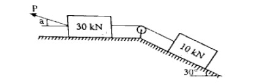
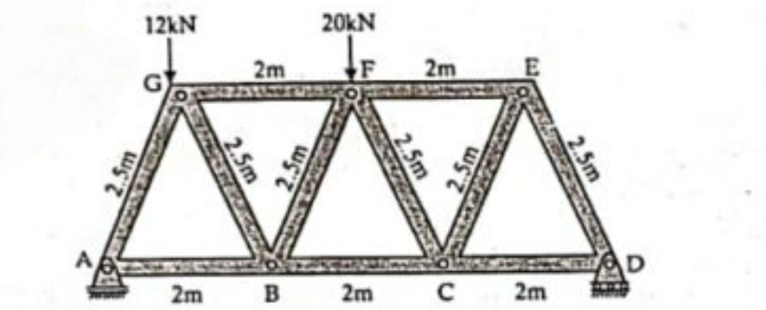

B.Tech. I & II Semester
Examination, December 2024
Grading System (GS)
Max Marks:
70 | Time: 3 Hours
Note:
i) Attempt any five questions.
ii) All questions carry equal marks.
a) Write on the characteristics of concrete's chemical and physical state. (Unit 1)
b) Use a sketch to illustrate each Theodolite component. (Unit 2)
a) Give a brief explanation of remote sensing and how it is used in the building industry. (Unit 3)
b) Briefly talk about the concrete preparation procedure. (Unit 1)
a) Describe in brief about the different types of RCC footing. (Unit 1)
b) Briefly discuss the compaction and curing process. (Unit 1)
a) Explain in briefly about the Reciprocal levelling. (Unit 2)
b) The following are the consecutive reading were taken with a levelling instrument at intervals of 20 m. 3.375, 2.730, 1.615, 2.450, 3.835, 5.070, 4.835, 2.985, 4.435, 2.630, 4.255 and 5.630 m. The instrument was shifted after the fourth and eight reading. The last reading was taken BM of RL 125.250 m. Find the RLs of all the point using Rise and Fall method and satisfy the answer with arithmetic Check. (Unit 2)
a) Find the least value of P required to cause the system of blocks shown in Figure to have impending motion to the left. The coefficient of friction under each block is 0.20. (Unit 4)

b) The following offset were taken from a line to an irregular boundary line at an interval of 10 m. 0, 3.500, 2.550, 5.250, 6.650, 4.250, 0 m. Compute the area between the chain line, the irregular boundary line and the end offsets by: (Unit 3)
i) Mid-Ordinate Rule
ii) Average-Ordinate Rule
iii) The Trapezoidal Rule
iv) Simpson's Rule
a) Write down the assumption used in Method of the joints. (Unit 4)
b) Solve the force in all the member using the using method of joint. (Unit 4)

a) Provide the detailed procedure to draw the shear force and bending moment diagram under point load, U.D.L. and Couple. (Unit 5)
b) Draw the shear force and bending moment diagram for the simple supported beam of the length "L" carrying U.D.L. of "W" kN/m throughout its length of the beam and also find the max bending moment and shear force. (Unit 5)
Explain in brief about the any two: (Unit 5)
i) Principle Axes with the example
ii) Product of inertia with the example
iii) Moment of inertia of Rectangular Shape